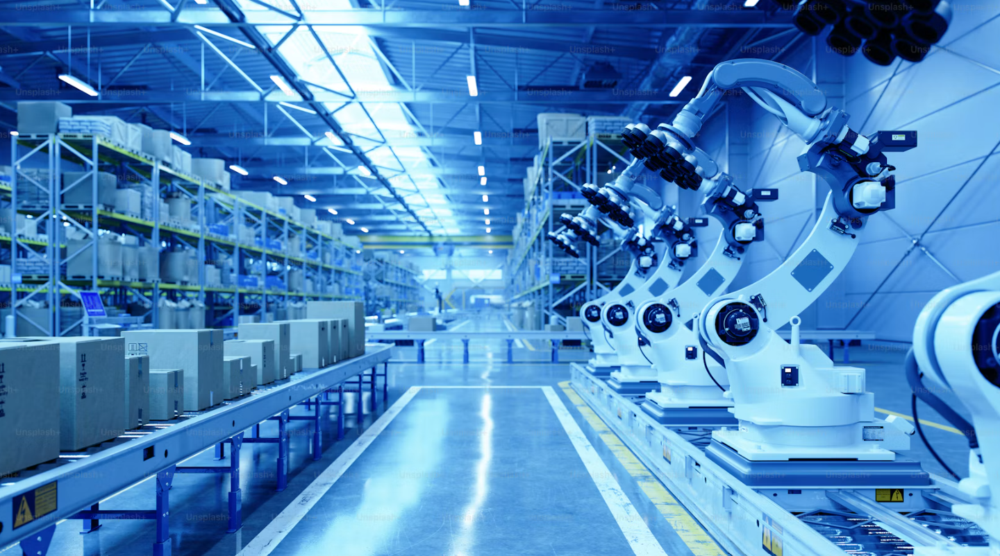
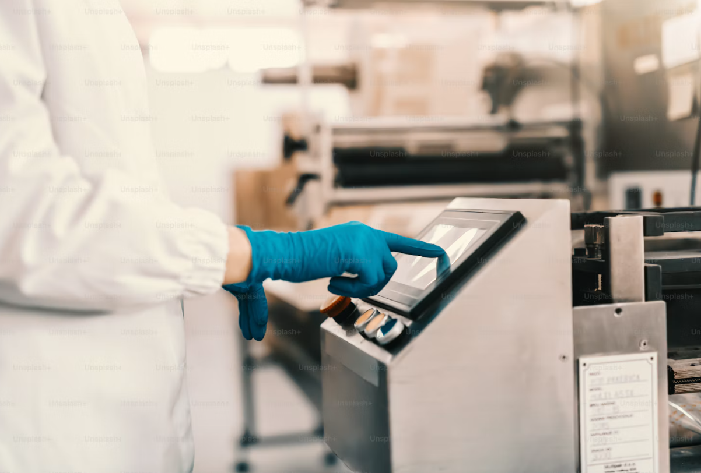

Så kan jag hjälpa din verksamhet
Edrell Engineering erbjuder konsultstöd till tekniska verksamheter som behöver utveckla arbetssätt, samordna funktioner eller skapa bättre struktur i projekt och processer.
Uppdragen anpassas efter verksamhetens behov och kan omfatta både avgränsade insatser och löpande stöd.

Teknik och industriell verksamhet
Teknisk förståelse och erfarenhet från industriella miljöer,
produktutveckling och mekanikkonstruktion.
Exempel på insatser:
- Samordning mellan tekniska och verksamhetsnära funktioner
- Stöd i produktutvecklings- och produktvårdsprojekt
- Framtagning av teknisk dokumentation
- Strukturering av information och arbetssätt
- Koordinering av aktiviteter, beroenden och gränssnitt

Kvalitet och arbetssätt
Stöd i att utveckla struktur, processer och arbetssätt som bidrar till kvalitet och en mer välfungerande verksamhet.
Exempel på insatser:
- Utveckling och tydliggörande av processer
- Framtagning av instruktioner och utbildningsmaterial
- Stöd i förbättringsarbete och systematisk uppföljning
- Struktur för ansvar, informationsflöden och arbetssätt

Projektledning och koordinering
Stöd i projekt och tvärfunktionella samarbeten där planering, samordning och uppföljning är viktiga för att arbetet ska gå framåt.
Exempel på insatser:
- Planering och strukturering av aktiviteter
- Samordning mellan funktioner och intressenter
- Uppföljning av tidplaner, åtaganden och beroenden
- Kommunikation och presentation av status och beslutsunderlag
- Identifiering av hinder och samordning av nästa steg
Verksamhetsutveckling och processförbättring
Stöd i att förstå nuläget, identifiera utvecklingsbehov och skapa tydligare och mer effektiva arbetssätt.
Exempel på insatser:
- Kartläggning och utveckling av processer
- Tydliggörande av roller, ansvar och gränssnitt
- Strukturering och standardisering av arbetssätt
- Framtagning av instruktioner, mallar och stödmaterial
- Uppföljning av aktiviteter och förbättringar
Ett uppdrag börjar med verksamhetens behov
Behovet kan handla om att få struktur på ett projekt, utveckla en process eller skapa bättre förutsättningar för att genomföra en förändring.
Tillsammans tydliggör vi uppdragets syfte, omfattning och förväntade resultat för att hitta en lösning som passar verksamhetens behov.